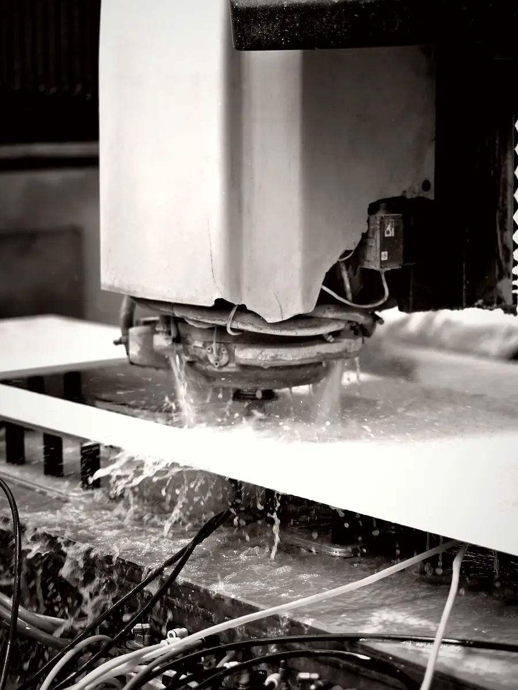
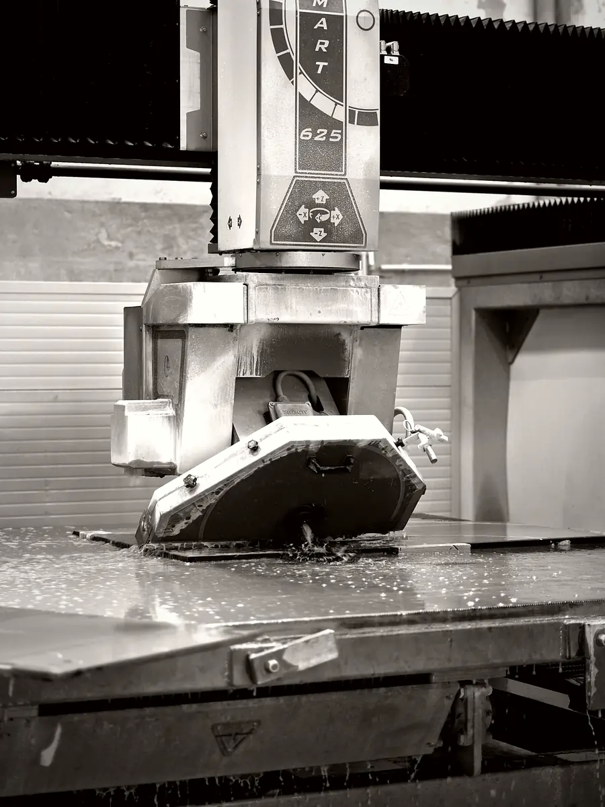
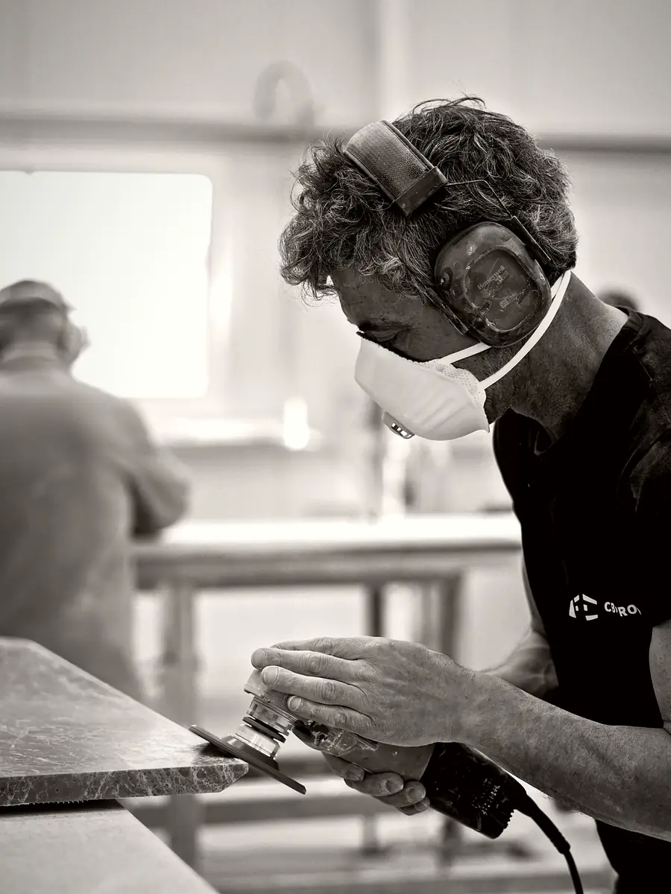
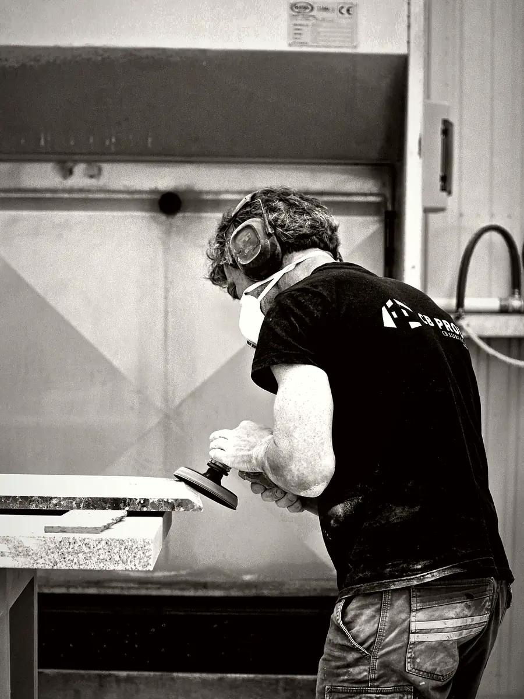
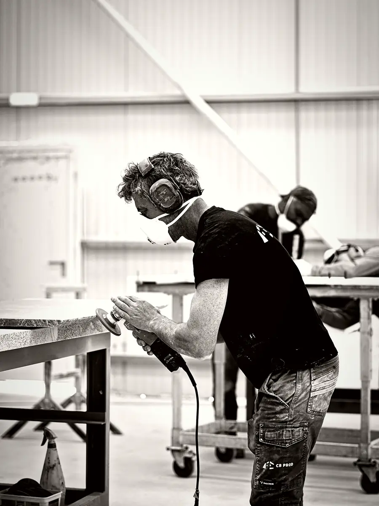
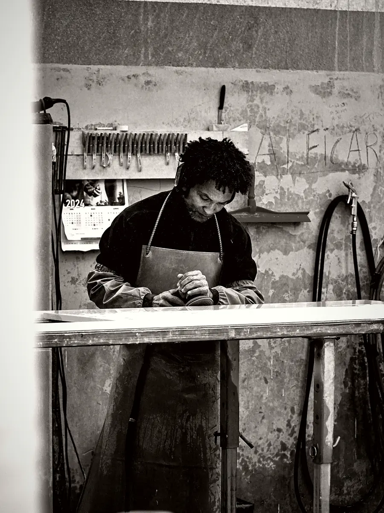

Fabrication sur mesure · Mafra
Votre atelier de façonnage en sous-traitance, à Mafra
Marbriers, cuisinistes et agenceurs, confiez-nous le façonnage de vos pièces en pierre naturelle et en matériaux techniques. Dans notre usine d'Igreja Nova, nous assurons la découpe, l'usinage CNC au dixième de millimètre, le polissage, les finitions et le contrôle qualité d'après vos plans, puis nous livrons. Vous gagnez en capacité sans investir dans de nouvelles machines.
La sous-traitance de façonnage pour les marbriers et cuisinistes
Un pic de commandes, une machine immobilisée, un matériau que votre atelier ne travaille pas habituellement, un projet trop volumineux pour vos capacités : la sous-traitance de façonnage vous permet de dire oui à vos clients sans désorganiser votre production.
CB Prod est d'abord un atelier de transformation. Nous fabriquons chaque jour pour les sociétés du groupe CB Surfaces et pour des professionnels indépendants, en France, au Portugal et à l'international. Vous bénéficiez de la même organisation, des mêmes machines et du même contrôle.
Vous restez maître de votre relation client. Vous nous transmettez vos plans et fichiers techniques, nous fabriquons conformément à ce qui a été validé, et la mise en place reste assurée par vos équipes ou vos partenaires. Nous pouvons aussi sélectionner et acheter la matière pour vous auprès de nos fournisseurs internationaux.
Découpe et usinage CNC d'après vos fichiers
Nos machines à commande numérique travaillent directement à partir de vos plans cotés et fichiers techniques, par exemple en DXF, DWG ou PDF coté. Avant toute découpe, notre équipe vérifie la cohérence des cotes et prépare le débit : la répartition des pièces sur les dalles est optimisée pour limiter les chutes et assortir les veinages quand c'est possible.
L'usinage couvre les opérations courantes d'un atelier de marbrerie :
- découpe des contours, angles et formes courbes ;
- découpes d'évier, sous plan ou à encastrer, et de plaque de cuisson ;
- perçages de robinetterie, de prises et de passages techniques ;
- profils de chants et rainures selon vos plans ;
- pièces assorties découpées dans une même dalle, comme un plan et sa crédence.
La précision de la commande numérique garantit des pièces régulières, y compris sur une série.
Polissage et finitions à la main
Une pièce simplement découpée n'est pas une pièce finie. Après l'usinage, chaque élément passe entre les mains de nos artisans, héritiers d'un savoir-faire familial transmis depuis plus de trois générations.
Ils reprennent les chants, adoucissent les arêtes, ajustent les découpes et polissent les parties vues. Selon le matériau et la gamme, nous réalisons ou respectons les finitions polie, mate ou texturée, en veillant à ce que la surface et les chants présentent un aspect homogène sous la lumière.
Nous travaillons le marbre, le granit et le quartzite, y compris les versions traitées Sensa et Texta, comme les quartz, les céramiques grand format, le Corian®, le Minéralis et les pierres recyclées. Chaque matière demande ses outils et ses gestes : nos équipes les connaissent et adaptent leur méthode, notamment sur les céramiques fines ou les marbres plus tendres.
Contrôle qualité, conditionnement et livraison
Avant expédition, chaque pièce est contrôlée par rapport à la commande validée :
- dimensions et équerrage ;
- position et dimensions des découpes et perçages ;
- profils de chants et qualité des arêtes ;
- aspect de la surface et régularité de la finition.
Une pièce non conforme ne quitte pas l'usine. Les pièces validées sont ensuite conditionnées de façon sécurisée, avec des protections adaptées à leur forme et à leur fragilité, pour arriver chez vous dans l'état où elles sont sorties de l'atelier.
Nous livrons en France, au Portugal et à l'international, à l'adresse que vous indiquez : votre atelier, votre dépôt ou le chantier. Au Portugal, l'enlèvement à l'usine est aussi possible sur rendez-vous. Vous recevez des pièces prêtes à être mises en œuvre par vos équipes, sans reprise à prévoir.
L'atelier en images

Découpe CNC sous eau 
Scie à pont 
Polissage d'un chant 
Finition à la main 
Reprise des chants 
Ponçage avant contrôle
Vos questions
Quels fichiers faut-il fournir pour une sous-traitance de façonnage ?
Des plans cotés de chaque pièce, idéalement accompagnés de fichiers techniques dans un format courant, par exemple DXF, DWG ou PDF coté. Précisez le matériau, l'épaisseur, les finitions, les profils de chants, les découpes et les références des appareils à encastrer. Nous vérifions la cohérence du dossier et vous signalons tout point à clarifier avant d'établir le devis.
Pouvez-vous aussi fournir la matière ?
Oui. L'approvisionnement fait partie de nos activités : nous sélectionnons et achetons les dalles auprès de fournisseurs internationaux, en pierre naturelle comme en quartz, céramique, Corian®, Minéralis ou pierre recyclée. Vous indiquez la gamme et le coloris souhaités, nous vérifions la disponibilité et intégrons la matière au devis, ce qui vous évite de gérer plusieurs fournisseurs.
Vous chargez-vous des mesures ou de la mise en place ?
Non. CB Prod intervient exclusivement dans la fabrication sur mesure et la livraison. Les dimensions sont relevées par vous ou vos partenaires, et la mise en place des pièces reste à votre charge. Cette organisation vous laisse la pleine maîtrise de votre chantier et de votre client, tandis que nous garantissons des pièces conformes à vos plans validés.
Envoyez-nous vos plans
Plans cotés, fichiers techniques, matériau et finitions : nous étudions votre demande et vous répondons sous 48 heures ouvrées.